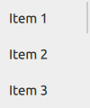

ScrollIndicator QML Type
Vertical or horizontal non-interactive scroll indicator. More...
| Import Statement: | import QtQuick.Controls 2.5 |
| Since: | Qt 5.7 |
| Inherits: |
Properties
- active : bool
- horizontal : bool
- minimumSize : real
- orientation : enumeration
- position : real
- size : real
- vertical : bool
- visualPosition : real
- visualSize : real
Attached Properties
- horizontal : ScrollIndicator
- vertical : ScrollIndicator
Detailed Description

ScrollIndicator is a non-interactive indicator that indicates the current scroll position. A scroll indicator can be either vertical or horizontal, and can be attached to any Flickable, such as ListView and GridView.
Flickable {
// ...
ScrollIndicator.vertical: ScrollIndicator { }
}
Attaching ScrollIndicator to a Flickable
Note: When ScrollIndicator is attached vertically or horizontally to a Flickable, its geometry and the following properties are automatically set and updated as appropriate:
An attached ScrollIndicator re-parents itself to the target Flickable. A vertically attached ScrollIndicator resizes itself to the height of the Flickable, and positions itself to either side of it based on the layout direction. A horizontally attached ScrollIndicator resizes itself to the width of the Flickable, and positions itself to the bottom. The automatic geometry management can be disabled by specifying another parent for the attached ScrollIndicator. This can be useful, for example, if the ScrollIndicator should be placed outside a clipping Flickable. This is demonstrated by the following example:
Flickable {
id: flickable
clip: true
// ...
ScrollIndicator.vertical: ScrollIndicator {
parent: flickable.parent
anchors.top: flickable.top
anchors.left: flickable.right
anchors.bottom: flickable.bottom
}
}
Binding the Active State of Horizontal and Vertical Scroll Indicators
Horizontal and vertical scroll indicators do not share the active state with each other by default. In order to keep both indicators visible whilst scrolling to either direction, establish a two-way binding between the active states as presented by the following example:
Flickable { anchors.fill: parent contentWidth: parent.width * 2 contentHeight: parent.height * 2 ScrollIndicator.horizontal: ScrollIndicator { id: hbar; active: vbar.active } ScrollIndicator.vertical: ScrollIndicator { id: vbar; active: hbar.active } }
Non-attached Scroll Indicators
It is possible to create an instance of ScrollIndicator without using the attached property API. This is useful when the behavior of the attached scoll indicator is not sufficient or a Flickable is not in use. In the following example, horizontal and vertical scroll indicators are used to indicate how far the user has scrolled over the text (using MouseArea instead of Flickable):
Rectangle { id: frame clip: true width: 160 height: 160 border.color: "black" anchors.centerIn: parent Text { id: content text: "ABC" font.pixelSize: 169 MouseArea { id: mouseArea drag.target: content drag.minimumX: frame.width - width drag.minimumY: frame.height - height drag.maximumX: 0 drag.maximumY: 0 anchors.fill: content } } ScrollIndicator { id: verticalIndicator active: mouseArea.pressed orientation: Qt.Vertical size: frame.height / content.height position: -content.y / content.height anchors { top: parent.top; right: parent.right; bottom: parent.bottom } } ScrollIndicator { id: horizontalIndicator active: mouseArea.pressed orientation: Qt.Horizontal size: frame.width / content.width position: -content.x / content.width anchors { left: parent.left; right: parent.right; bottom: parent.bottom } } }
See also ScrollBar, Customizing ScrollIndicator, and Indicator Controls.
Property Documentation
active : bool |
This property holds whether the indicator is active, that is, when the attached Flickable is moving.
It is possible to keep both horizontal and vertical indicators visible while scrolling in either direction.
This property is automatically set when the scroll indicator is attached to a flickable.
[read-only] horizontal : bool |
This property holds whether the scroll indicator is horizontal.
This property was introduced in QtQuick.Controls 2.3 (Qt 5.10).
See also orientation.
minimumSize : real |
This property holds the minimum size of the indicator, scaled to 0.0 - 1.0.
This property was introduced in QtQuick.Controls 2.4 (Qt 5.11).
See also size, visualSize, and visualPosition.
orientation : enumeration |
This property holds the orientation of the indicator.
Possible values:
| Constant | Description |
|---|---|
Qt.Horizontal | Horizontal |
Qt.Vertical | Vertical (default) |
This property is automatically set when the scroll indicator is attached to a flickable.
See also horizontal and vertical.
position : real |
This property holds the position of the indicator, scaled to 0.0 - 1.0.
This property is automatically set when the scroll indicator is attached to a flickable.
See also Flickable::visibleArea and visualPosition.
size : real |
This property holds the size of the indicator, scaled to 0.0 - 1.0.
This property is automatically set when the scroll indicator is attached to a flickable.
See also Flickable::visibleArea, minimumSize, and visualSize.
[read-only] vertical : bool |
This property holds whether the scroll indicator is vertical.
This property was introduced in QtQuick.Controls 2.3 (Qt 5.10).
See also orientation.
visualPosition : real |
This property holds the effective visual position of the indicator, which may be limited by the minimum size.
This property was introduced in QtQuick.Controls 2.4 (Qt 5.11).
See also position and minimumSize.
visualSize : real |
This property holds the effective visual size of the indicator, which may be limited by the minimum size.
This property was introduced in QtQuick.Controls 2.4 (Qt 5.11).
See also size and minimumSize.
Attached Property Documentation
ScrollIndicator.horizontal : ScrollIndicator |
This property attaches a horizontal scroll indicator to a Flickable.
Flickable {
contentWidth: 2000
ScrollIndicator.horizontal: ScrollIndicator { }
}
See also Attaching ScrollIndicator to a Flickable.
ScrollIndicator.vertical : ScrollIndicator |
This property attaches a vertical scroll indicator to a Flickable.
Flickable {
contentHeight: 2000
ScrollIndicator.vertical: ScrollIndicator { }
}
See also Attaching ScrollIndicator to a Flickable.